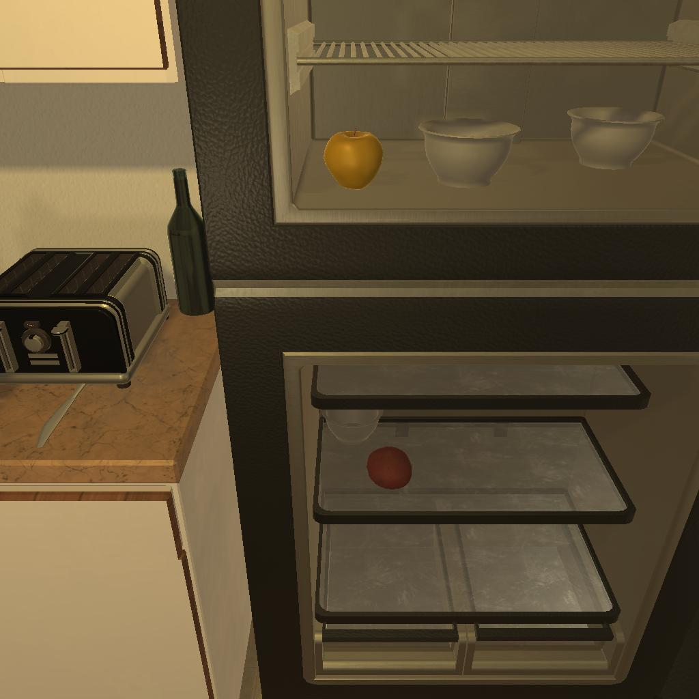

---------------------------------------------------------task: 14---------------------------------------------------------
--------------------------------------------------------------------------------------------------------------------------------------------------------------------
--------------------------------------------------------------------------------------------------------------------------------------------------------------------
Step:--------------------------------------------------------------------------7-------------------------------------------------------------------------------
----------------------------------------
VLM Prompt:
**Task**
Please perform as an embodied AI agent. Our final objective is to put a cool apple in countertop. Below is the plan for completing the task, the current observation, alongside historical data and admissible actions for the next step. Please determine the best action for the next step!
**Plan**
Below is a detailed step-by-step plan to complete the task.
1. Find an apple.
2. Pick up the apple.
3. Find a fridge.
4. Cool the apple with the fridge.
5. Find a countertop.
6. Place the cooled apple on the countertop.
**Current Observation**
Displayed is an image capturing the current position of the agent.
**History Information**
Displayed are the previous observations with their corresponding actions.
State 0:
No history.
State 1:
1. Step Index in the Plan: 1
2. Objects: Kitchen Sink, Glass, Window with Curtains
3. Action: go to fridge 1
State 2:
1. Step Index in the Plan: 2
2. Objects: Fridge (side view)
3. Action: go to countertop 1
State 3:
1. Step Index in the Plan: 2
2. Objects: Microwave
3. Action: go to countertop 2
State 4:
1. Step Index in the Plan: 2
2. Objects: Countertop, Apple
3. Action: take apple 1 from countertop 2
State 5:
1. Step Index in the Plan: Not specified but involves cooling an apple
2. Objects: Countertop, Toaster, Two Bottles, Salt/Pepper Shaker, Apple, Partially Visible Fridge
3. Action: go to fridge 1
State 6:
1. Step Index in the Plan: After picking up the apple
2. Objects: Fridge, Apple
3. Action: open fridge 1
State 7:
1. Step Index in the Plan: 4
2. Objects: Fridge, Apple (inside the fridge), Apple (on the floor)
3. Action: put apple 1 in/on fridge 1
**Admissible Actions**
(1): go to microwave 1
(2): go to countertop 1
(3): go to cabinet 1
(4): go to diningtable 1
(5): go to drawer 1
(6): go to sink 1
(7): go to cabinet 2
(8): go to cabinet 3
(9): go to sinkbasin 1
(10): go to cabinet 4
(11): go to cabinet 5
(12): go to drawer 2
(13): go to countertop 2
(14): go to toaster 1
(15): go to cabinet 6
(16): go to stoveburner 1
(17): go to cabinet 7
(18): go to stoveburner 2
(19): go to stoveburner 3
(20): go to stoveburner 4
(21): go to drawer 3
(22): go to cabinet 8
(23): go to cabinet 9
(24): go to cabinet 10
(25): go to coffeemachine 1
(26): go to cabinet 11
(27): go to garbagecan 1
(28): close fridge 1
(29): take bowl 1 from fridge 1
(30): take bowl 2 from fridge 1
(31): take winebottle 1 from fridge 1
(32): take bowl 3 from fridge 1
(33): take potato 1 from fridge 1
(34): take butterknife 1 from fridge 1
**Analysis Guideline**
1. Analyze the history and current observation, and then determine our current step in the plan and our current place.
2. List all visible objects related to the task in the current observation, without summarizing any as "various items."
3. Analyze the objects in the current observation based on the history and the requirements for the current step, and then determine if we can complete the step with the current observation.
4. Analyze and decide on the most appropriate action to take.
5. Summarize the analysis using the following format: "Analysis: [The summarization of the analysis], The Most Appropriate Action: (i which is the integer.): [Selected action]"
**Notes**
1. We must complete each step of the plan in order and cannot skip steps when the previous ones are not finished.
2. For "Go to" actions listed as "go to xxx [n]", interpret this as there are n distinct actions available: "go to xxx 1", "go to xxx 2", ..., "go to xxx n". Select one specific action from these options instead of using "go to xxx [n]".
3. If receptacles such as drawers, cabinets, and so forth are closed in the current observation, we may try to open them.
4. Pay attention to synonyms and ensure clarity in the terms used.
5. We must determine and provide the single action which must be in the **Admissible Actions**.
6. If there is no history available, we are at the first step and the current place is "Unknown".
**Answer**
Please select the most suitable action by following the **Analysis Guideline**, keeping the above **Notes** in mind.
----------------------------------------
----------------------------------------
VLM Response:
Analysis: Based on the history information and current observation, we are currently at Step 5 in the plan, which is to find a countertop. The current observation shows a fridge with its door open, revealing an apple inside, as well as a countertop. The previous action was to place the apple in the fridge to cool it, which corresponds to Step 4 in the plan. Given that the apple has been cooled in the fridge, we can now proceed to Step 5, which is to find a countertop to place the cooled apple on. The visible objects related to the task in the current observation are the fridge, the cooled apple inside the fridge, and the countertop. Since the countertop is visible, we can complete Step 5 with the current observation. Therefore, the most appropriate action to take next would be to go to the countertop to prepare for placing the cooled apple on it.
The Most Appropriate Action: (2): go to countertop 1
----------------------------------------
----------------------------------------
>>> Refine VLM Response and Get Pure Action: go to countertop 1
----------------------------------------
-----------------------------------------------------------------
Running time: 76.64924144744873 seconds
Total Money: 0
-----------------------------------------------------------------
-----------------------------------------------------------------
Summarization Prompt:
**Context**
Analysis: Since there is no history information, we are at the first step in the plan, which is to find a statue. The current place is unknown. In the current observation, we see a floorlamp next to an armchair with a small table that has a small object on it, which could potentially be the statue we are looking for. Since the plan requires us to find a statue first and it appears there might be one on the table next to the armchair, we should investigate this object to determine if it is the statue we need.
The Most Appropriate Action: (1): go to armchair 1
**Summary**
1. Step Index in the Plan: 1
2. Objects: Floorlamp, Armchair, Small Table, Small Object (potential statue)
3. Action: go to armchair 1
**Context**
Analysis: Based on the history information and current observation, we are currently at Step 5 in the plan, which is to find a countertop. The current observation shows a fridge with its door open, revealing an apple inside, as well as a countertop. The previous action was to place the apple in the fridge to cool it, which corresponds to Step 4 in the plan. Given that the apple has been cooled in the fridge, we can now proceed to Step 5, which is to find a countertop to place the cooled apple on. The visible objects related to the task in the current observation are the fridge, the cooled apple inside the fridge, and the countertop. Since the countertop is visible, we can complete Step 5 with the current observation. Therefore, the most appropriate action to take next would be to go to the countertop to prepare for placing the cooled apple on it.
The Most Appropriate Action: (2): go to countertop 1
Please summarize the context by following above examples when providing the summary, and ensure that only the summary is included, without any extra explanation.
**Summary**
-----------------------------------------------------------------
-----------------------------------------------------------------
Summarization Response:
1. Step Index in the Plan: 5
2. Objects: Fridge, Apple (cooled), Countertop
3. Action: go to countertop 1
-----------------------------------------------------------------
-----------------------------------------------------------------
Text Observation:You arrive at loc 1. On the countertop 1, you see a soapbottle 1, a cup 1, a knife 1, and a spatula 1.
-----------------------------------------------------------------
UNSUCCEED